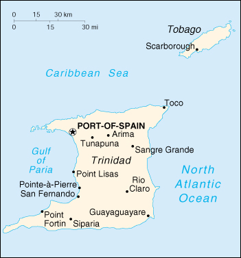

{kind=link}


| Trinidad and Tobago |
|
|  | |
| Introduction |
Background: The islands came under British control in the 19th century; independence was granted in 1962. The country is one of the most prosperous in the Caribbean thanks largely to petroleum and natural gas production and processing. Tourism, mostly in Tobago, is targeted for expansion and is growing.
| Geography |
Location: Caribbean, islands between the Caribbean Sea and the North Atlantic Ocean, northeast of Venezuela
Geographic coordinates: 11 00 N, 61 00 W
Map references: Central America and the Caribbean
Area:
total:
5,128 sq km
land:
5,128 sq km
water:
0 sq km
Area - comparative: slightly smaller than Delaware
Land boundaries: 0 km
Coastline: 362 km
Maritime claims:
contiguous zone:
24 nm
continental shelf:
200 nm or to the outer edge of the continental margin
exclusive economic zone:
200 nm
territorial sea:
12 nm
Climate: tropical; rainy season (June to December)
Terrain: mostly plains with some hills and low mountains
Elevation extremes:
lowest point:
Caribbean Sea 0 m
highest point:
El Cerro del Aripo 940 m
Natural resources: petroleum, natural gas, asphalt
Land use:
arable land:
15%
permanent crops:
9%
permanent pastures:
2%
forests and woodland:
46%
other:
28% (1993 est.)
Irrigated land: 220 sq km (1993 est.)
Natural hazards: outside usual path of hurricanes and other tropical storms
Environment - current issues: water pollution from agricultural chemicals, industrial wastes, and raw sewage; oil pollution of beaches; deforestation; soil erosion
Environment - international agreements:
party to:
Biodiversity, Climate Change, Climate Change-Kyoto Protocol, Endangered Species, Hazardous Wastes, Law of the Sea, Marine Life Conservation, Nuclear Test Ban, Ozone Layer Protection, Tropical Timber 83, Tropical Timber 94, Wetlands
signed, but not ratified:
none of the selected agreements
| People |
Population: 1,175,523 (July 2000 est.)
Age structure:
0-14 years:
25% (male 151,736; female 146,135)
15-64 years:
68% (male 410,668; female 389,303)
65 years and over:
7% (male 34,559; female 43,122) (2000 est.)
Population growth rate: -0.49% (2000 est.)
Birth rate: 13.84 births/1,000 population (2000 est.)
Death rate: 8.84 deaths/1,000 population (2000 est.)
Net migration rate: -9.92 migrant(s)/1,000 population (2000 est.)
Sex ratio:
at birth:
1.03 male(s)/female
under 15 years:
1.04 male(s)/female
15-64 years:
1.05 male(s)/female
65 years and over:
0.8 male(s)/female
total population:
1.03 male(s)/female (2000 est.)
Infant mortality rate: 25.76 deaths/1,000 live births (2000 est.)
Life expectancy at birth:
total population:
67.97 years
male:
65.45 years
female:
70.59 years (2000 est.)
Total fertility rate: 1.83 children born/woman (2000 est.)
Nationality:
noun:
Trinidadian(s), Tobagonian(s)
adjective:
Trinidadian, Tobagonian
Ethnic groups: black 39.5%, East Indian (a local term - primarily immigrants from northern India) 40.3%, mixed 18.4%, white 0.6%, Chinese and other 1.2%
Religions: Roman Catholic 29.4%, Hindu 23.8%, Anglican 10.9%, Muslim 5.8%, Presbyterian 3.4%, other 26.7%
Languages: English (official), Hindi, French, Spanish, Chinese
Literacy:
definition:
age 15 and over can read and write
total population:
97.9%
male:
98.8%
female:
97% (1995 est.)
| Government |
Country name:
conventional long form:
Republic of Trinidad and Tobago
conventional short form:
Trinidad and Tobago
Data code: TD
Government type: parliamentary democracy
Capital: Port-of-Spain
Administrative divisions: 8 counties, 3 municipalities*, and 1 ward**; Arima*, Caroni, Mayaro, Nariva, Port-of-Spain*, Saint Andrew, Saint David, Saint George, Saint Patrick, San Fernando*, Tobago**, Victoria
Independence: 31 August 1962 (from UK)
National holiday: Independence Day, 31 August (1962)
Constitution: 1 August 1976
Legal system: based on English common law; judicial review of legislative acts in the Supreme Court; has not accepted compulsory ICJ jurisdiction
Suffrage: 18 years of age; universal
Executive branch:
chief of state:
President Arthur Napoleon Raymond ROBINSON (since 19 March 1997)
head of government:
Prime Minister Basdeo PANDAY (since 9 November 1995)
cabinet:
Cabinet appointed from among the members of Parliament
elections:
president elected by an electoral college, which consists of the members of the Senate and House of Representatives, for a five-year term; election last held NA November 1995 (next to be held by November 2000); prime minister appointed from among the members of Parliament; following legislative elections, the leader of the majority party in the House of Representatives is usually appointed prime minister
election results:
Arthur Napoleon Raymond ROBINSON elected president; percent of electoral college vote - 69%
Legislative branch:
bicameral Parliament consists of the Senate (31 seats; members appointed by the president for a maximum term of five years) and the House of Representatives (36 seats; members are elected by popular vote to serve five-year terms)
elections:
House of Representatives - last held 6 November 1995 (next to be held by December 2000)
election results:
House of Representatives - percent of vote - PNM 52%, UNC 42.2%, NAR 5.2%; seats by party - PNM 15, UNC 19, NAR 1, independent 1; note - the UNC formed a coalition with the NAR
note:
Tobago has a unicameral House of Assembly, with 15 members serving four-year terms
Judicial branch: Supreme Court comprised of the High Court of Justice and the Court of Appeals, judges are appointed by the president on the advice of the prime minister
Political parties and leaders: Movement for Social Transformation or MOTION [David ABDULLAH]; Movement for Unity and Progress or MUP [Hulsie BHAGGAN]; National Alliance for Reconstruction or NAR [leader NA]; National Development Party or NDP [Carson CHARLES]; National Joint Action Committee or NJAC [Makandal DAAGA]; People's National Movement or PNM [Patrick MANNING]; United National Congress or UNC [Basdeo PANDAY]
Political pressure groups and leaders: Jamaat Al Musilmeen [Abu BAKR]
International organization participation: ACP, C, Caricom, CCC, CDB, ECLAC, FAO, G-24, G-77, IADB, IBRD, ICAO, ICFTU, ICRM, IDA, IFAD, IFC, IFRCS, IHO, ILO, IMF, IMO, Intelsat, Interpol, IOC, ISO, ITU, LAES, NAM, OAS, OPANAL, OPCW, UN, UNCTAD, UNESCO, UNIDO, UNU, UPU, WFTU, WHO, WIPO, WMO, WTrO
Diplomatic representation in the US:
chief of mission:
Ambassador Michael A. ARNEAUD
chancery:
1708 Massachusetts Avenue NW, Washington, DC 20036
telephone:
[1] (202) 467-6490
FAX:
[1] (202) 785-3130
consulate(s) general:
Miami and New York
Diplomatic representation from the US:
chief of mission:
Ambassador Edward E. SHUMAKER, III
embassy:
15 Queen's Park West, Port-of-Spain
mailing address:
P. O. Box 752, Port-of-Spain
telephone:
[1] (809) 622-6372 through 6376, 6176
FAX:
[1] (809) 628-5462
Flag description: red with a white-edged black diagonal band from the upper hoist side
| Economy |
Economy - overview: Trinidad and Tobago has earned a reputation as an excellent investment site for international businesses. Successful economic reforms were implemented in 1995, and foreign investment and trade are flourishing. Persistently high unemployment remains one of the chief challenges of the government. The petrochemical sector has spurred growth in other related sectors, reinforcing the government's commitment to economic diversification. Tourism is growing, especially in the pleasure boat sector.
GDP: purchasing power parity - $9.41 billion (1999 est.)
GDP - real growth rate: 5% (1999 est.)
GDP - per capita: purchasing power parity - $8,500 (1999 est.)
GDP - composition by sector:
agriculture:
2%
industry:
44%
services:
54% (1998 est.)
Population below poverty line: 21% (1992 est.)
Household income or consumption by percentage share:
lowest 10%:
NA%
highest 10%:
NA%
Inflation rate (consumer prices): 3.5% (1999 est.)
Labor force: 558,700 (1998)
Labor force - by occupation: construction and utilities 12.4%, manufacturing, mining, and quarrying 14%, agriculture 9.5%, services 64.1% (1997 est.)
Unemployment rate: 14.2% (1998)
Budget:
revenues:
$1.54 billion
expenditures:
$1.6 billion, including capital expenditures of $117.3 million (1998)
Industries: petroleum, chemicals, tourism, food processing, cement, beverage, cotton textiles
Industrial production growth rate: 7.5% (1995)
Electricity - production: 4.763 billion kWh (1998)
Electricity - production by source:
fossil fuel:
99.27%
hydro:
0%
nuclear:
0%
other:
0.73% (1998)
Electricity - consumption: 4.43 billion kWh (1998)
Electricity - exports: 0 kWh (1998)
Electricity - imports: 0 kWh (1998)
Agriculture - products: cocoa, sugarcane, rice, citrus, coffee, vegetables; poultry
Exports: $2.4 billion (f.o.b., 1998)
Exports - commodities: petroleum and petroleum products, chemicals, steel products, fertilizer, sugar, cocoa, coffee, citrus, flowers
Exports - partners: US 36.9%, Caricom countries 29.4%, Central and South America 9.7%, EU 6.3% (1998)
Imports: $3 billion (c.i.f., 1998)
Imports - commodities: machinery, transportation equipment, manufactured goods, food, live animals
Imports - partners: US 44.7%, Latin America 18.9%, EU 13.7%, Japan 4.8% (1998)
Debt - external: $2.2 billion (1997 est.)
Economic aid - recipient: $121.4 million (1995)
Currency: 1 Trinidad and Tobago dollar (TT$) = 100 cents
Exchange rates: Trinidad and Tobago dollars (TT$) per US$1 - 6.2697 (January 2000), 6.2963 (1999), 6.2983 (1998), 6.2517 (1997), 6.0051 (1996), 5.9478 (1995)
Fiscal year: 1 October - 30 September
| Communications |
Telephones - main lines in use: 209,000 (1995)
Telephones - mobile cellular: 5,615 (1995)
Telephone system:
excellent international service; good local service
domestic:
NA
international:
satellite earth station - 1 Intelsat (Atlantic Ocean); tropospheric scatter to Barbados and Guyana
Radio broadcast stations: AM 2, FM 10, shortwave 0 (1998)
Radios: 680,000 (1997)
Television broadcast stations: 4 (1997)
Televisions: 425,000 (1997)
Internet Service Providers (ISPs): 5 (1999)
| Transportation |
Railways: minimal agricultural railroad system near San Fernando; railway service was discontinued in 1968
Highways:
total:
8,320 km
paved:
4,252 km
unpaved:
4,068 km (1996 est.)
Pipelines: crude oil 1,032 km; petroleum products 19 km; natural gas 904 km
Ports and harbors: Pointe-a-Pierre, Point Fortin, Point Lisas, Port-of-Spain, Scarborough, Tembladora
Merchant marine:
total:
2 ships (1,000 GRT or over) totaling 2,439 GRT/4,040 DWT
ships by type:
cargo 1, petroleum tanker 1 (1999 est.)
Airports: 6 (1999 est.)
Airports - with paved runways:
total:
3
over 3,047 m:
1
2,438 to 3,047 m:
1
1,524 to 2,437 m:
1 (1999 est.)
Airports - with unpaved runways:
total:
3
914 to 1,523 m:
1
under 914 m:
2 (1999 est.)
| Military |
Military branches: Trinidad and Tobago Defense Force (includes Ground Forces, Coast Guard, and Air Wing), Trinidad and Tobago Police Service
Military manpower - availability:
males age 15-49:
342,980 (2000 est.)
Military manpower - fit for military service:
males age 15-49:
245,253 (2000 est.)
Military expenditures - dollar figure: $83 million (FY94)
Military expenditures - percent of GDP: NA%
| Transnational Issues |
Disputes - international: none
Illicit drugs: transshipment point for South American drugs destined for the US and Europe; producer of cannabis